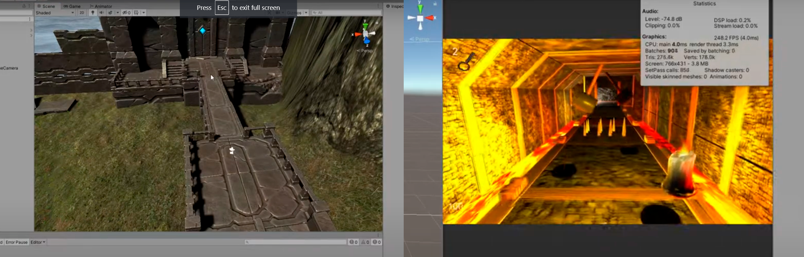
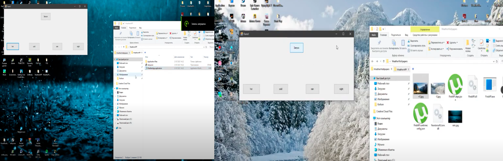
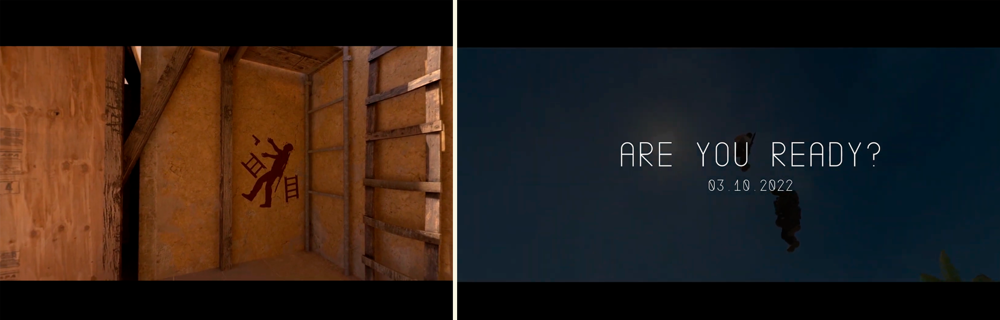
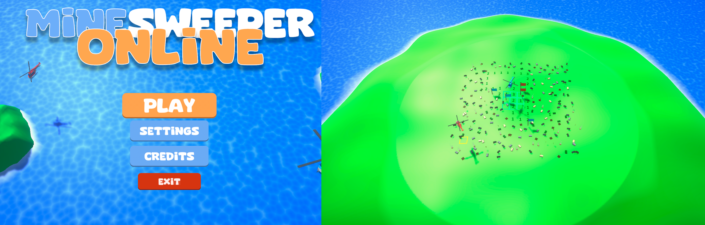
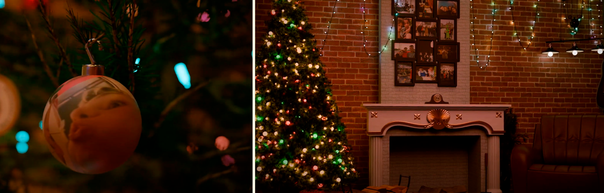
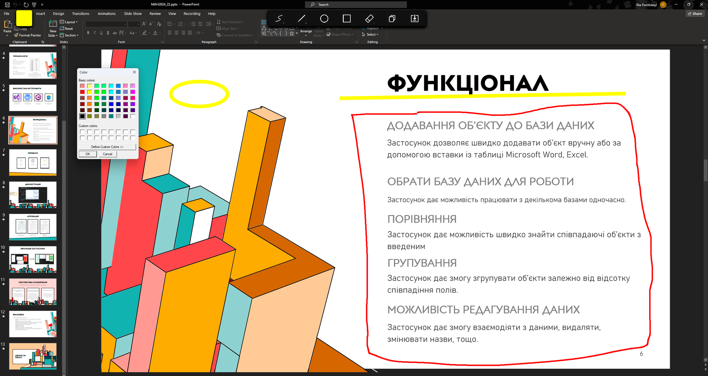
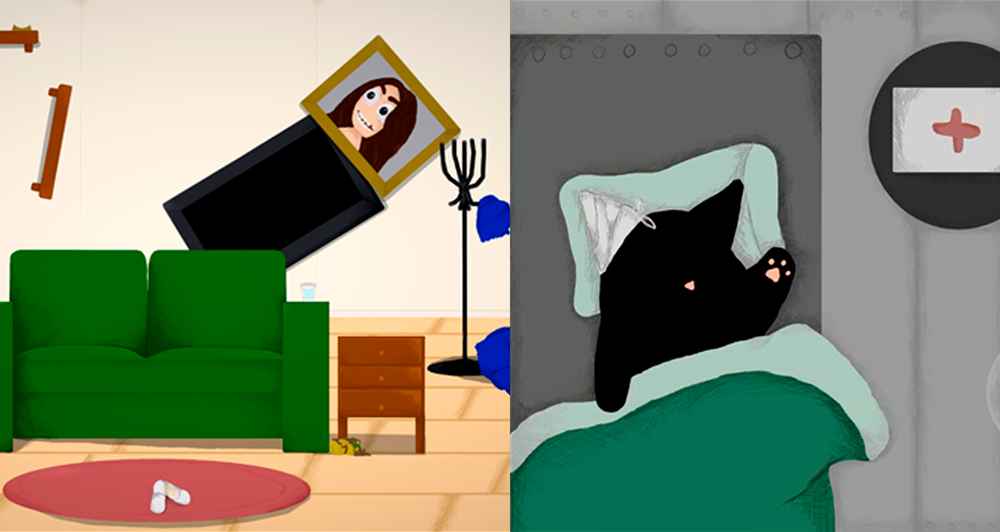
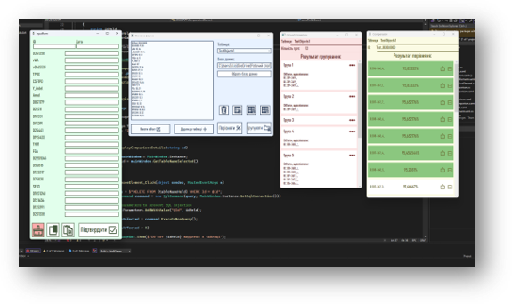

8 клас
Medieval Game
Medevial game - це мій самий перший проєкт як розробника, гра-бродилка з досить складними перешкодами, вона стала моїм першим досвідому програмуванні, а створювалась вона на курсах, з підтримкою куратора. Робота йшла на МАН, але не пройшла ліцейський тур
9 клас
WeatherProject
Проект який почався як практика роботи з API, та розробки першого застосунку, а не гри. Додаток звертався до сервісу, що надає дані о погоді в конкретному регіоні, та змінював тло робочого стола в залежності від погодних умов в місті, де знаходиться користувач. Робота захищалась на обласному турі, але не посіла призовго місця
CSMoment
Змонтоване відео високої якості, яке пародіювало дуже популярний момент кіберспортивної сцени, але в цьому випадку було взято момент мого друга з тієї самої гри
10 клас
MineSweeperOnline
MineSweeperOnline - буквально звичайний сапер, який перенесено в 3д простір, з великою нових графічних елементів, але основною фішкою є онлайн функції, тобто можна грати з друзями. Я отримав дуже багато досвіду працюючи з реалізацією онлайн функцій, синхронізації, шейдерів та інших важких тем й досі розробляю цей проект і хочу його довести до рівня продукту.
New Year render
В дев'ятому класі, я почав вивчати 3д моделювання як хоббі, як ітог піврічного вивчення, я зробив просте відео на 5 секунд з анімацією новорічного шара, з кумедним малюнокм на ньому, це дуже сподобалось моїм друзям. В кінці ж 10 класу, я вирішив зробити інше відео, на противагу минулорічному, воно мало 10 вискок деталізованих сцен, які зображували фотографії моїх друзів у новорічній обстановці, посилаючісь на жарти, які ми використовули за рік. Рендер відео (Розрахунок комп'ютером світла у сцені для кожного кадру), зайняв понад 70 годин, тривалість відео 1 хв 30 секунд.
ScreenshotProject
Після оновлення моєї системи до Windows 11, я стикнувся з проблемами, щодо стоврення скріншотів екрану, я отримував помилку, через яку не міг створити сріншот певної зони екрану, тому я вирішив розробити власне рішення цієї задачі, розробивши додаток, що дозволяє моментально робити скріншот, наносити зміни, копіювати та зберігати. Проєкт посів 2 місце обласного туру МАН
11 клас
CatComedy
CatComedy, це гра яка створювалась спеціально для заходу Global Game Jam Ukraine 2023, гра розроблялась у команді з 3 людей всього за 7 днів, в мої обов'язки входило програмування та керування командою, яка закривала аудіо та відео частини гри. Містить 4 різних рівні з різними задачами, артом, музикою. Темою заходу джема була Make me laugh, наш проєкт зайняв 10/73 місце
LOCUSAPP
Серйозний застосунок, який було створено за запитоми моєї матері, вона стосується оптимізації її роботи, тобто роботи суд-мед експертизи, конкретно індентифіцкації фрагментів тіла. Раніше я намагався допомогти їх налаштовувавши таблиці Excel, це не зв'явилось у нагоді, але зараз я зміг розробити повноцінний додаток, з правильною реалізацією. Проєкт здобув перемогу на обласному турі МАН, та йде далі на всеукраїнський тур.